剪力強度分析與設計
從這句話出發：三大機制 → 四道關卡 → 兩個邊界主題。
0一句話
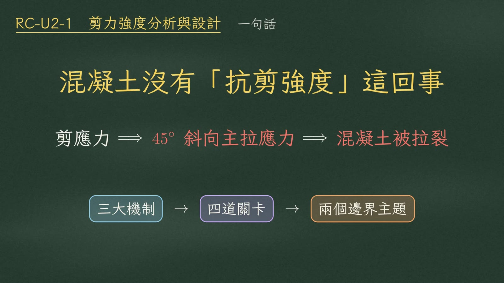
剪力這個單元，公式很多，但底層只有一句話：混凝土沒有抗剪強度這回事。所謂剪力破壞，是剪應力造成的斜向主拉應力，把混凝土拉裂。
$$\text{剪應力}\;\Longrightarrow\;45^\circ\ \text{斜向主拉應力}\;\Longrightarrow\;\text{混凝土被拉裂}$$從這句話出發，走過三大機制、四道關卡和兩個邊界主題。
1剪力破壞的本質
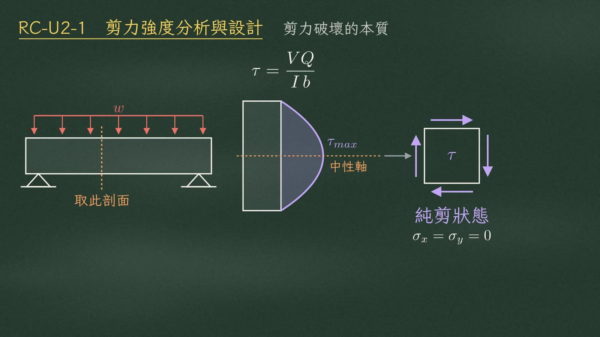
簡支梁取一個斷面。剪應力
$$\tau=\frac{VQ}{Ib}$$在中性軸最大，那裡的彎曲正應力剛好是零。所以中性軸上的微元素，處在純剪狀態（\(\sigma_x=\sigma_y=0\)）。
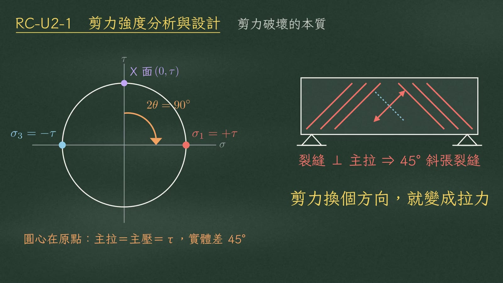
純剪的莫爾圓，圓心在原點，半徑就是剪應力。轉 90°（\(2\theta=90^\circ\)），也就是實體上轉 45°，主拉應力等於剪應力：\(\sigma_1=+\tau\)、\(\sigma_3=-\tau\)。
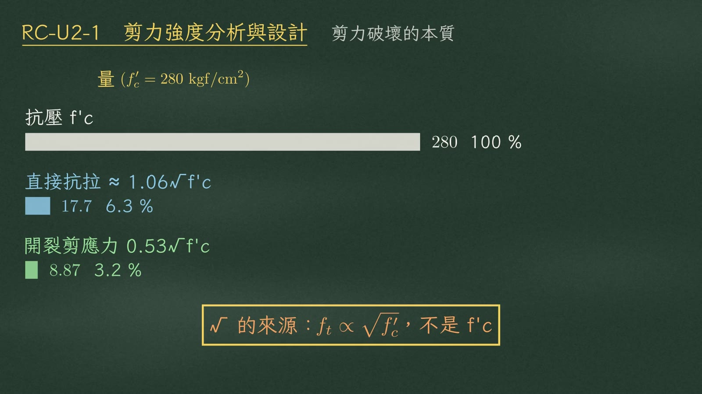
混凝土怕拉不怕壓。以 \(f'_c=280\) 為例：
| 強度 | 數值 (kgf/cm²) | 相對 f'c |
|---|---|---|
| 抗壓 \(f'_c\) | 280 | 100 % |
| 直接抗拉 \(\approx1.06\sqrt{f'_c}\) | 17.7 | 6.3 % |
| 開裂剪應力 \(0.53\sqrt{f'_c}\) | 8.87 | 3.2 % |
2三大傳力機制
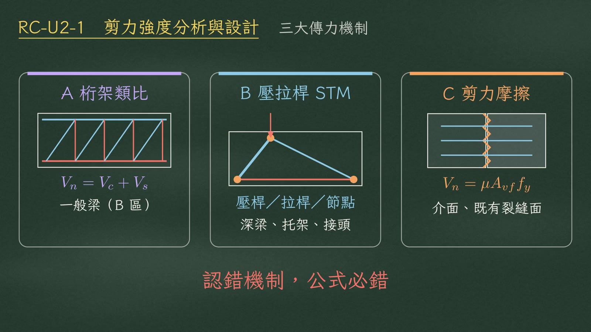
解題第一步，先認出傳力機制。
| 機制 | 適用 | 強度式／驗什麼 |
|---|---|---|
| A 桁架類比 | 一般梁 | \(V_n=V_c+V_s\) |
| B 壓拉桿 STM | 深梁、托架、接頭 | 驗壓桿、拉桿、節點 |
| C 剪力摩擦 | 新舊混凝土介面、既有裂縫面 | \(V_n=\mu A_{vf}f_y\) |
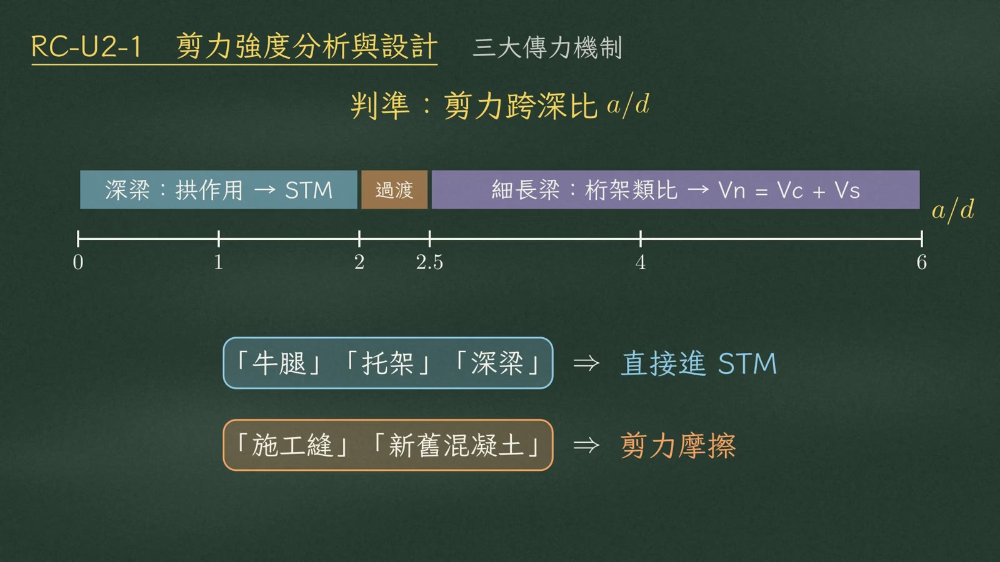
判準是剪力跨深比 \(a/d\)：
| a/d | 主控行為 | 用什麼 |
|---|---|---|
| \(\le 2\) | 拱作用主控（深梁） | 壓拉桿 STM |
| 2 ～ 2.5 | 過渡區 | — |
| \(>2.5\) | 細長梁 | 桁架類比 \(V_n=V_c+V_s\) |
3桁架類比 Vc 與 Vs
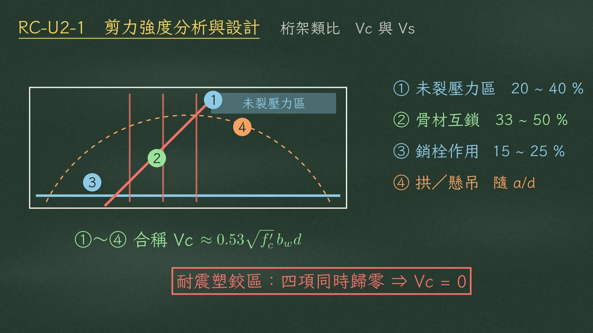
沿斜裂縫切開，傳剪力的有四樣，合稱 \(V_c\)：
| 來源 | 板上標示的比例 |
|---|---|
| ① 未裂壓力區 | 20 ～ 40 % |
| ② 骨材互鎖 | 33 ～ 50 % |
| ③ 縱筋銷栓作用 | 15 ～ 25 % |
| ④ 拱／懸吊 | 隨 a/d |
規範用一條式子代表：\(V_c\approx0.53\sqrt{f'_c}\,b_wd\)。
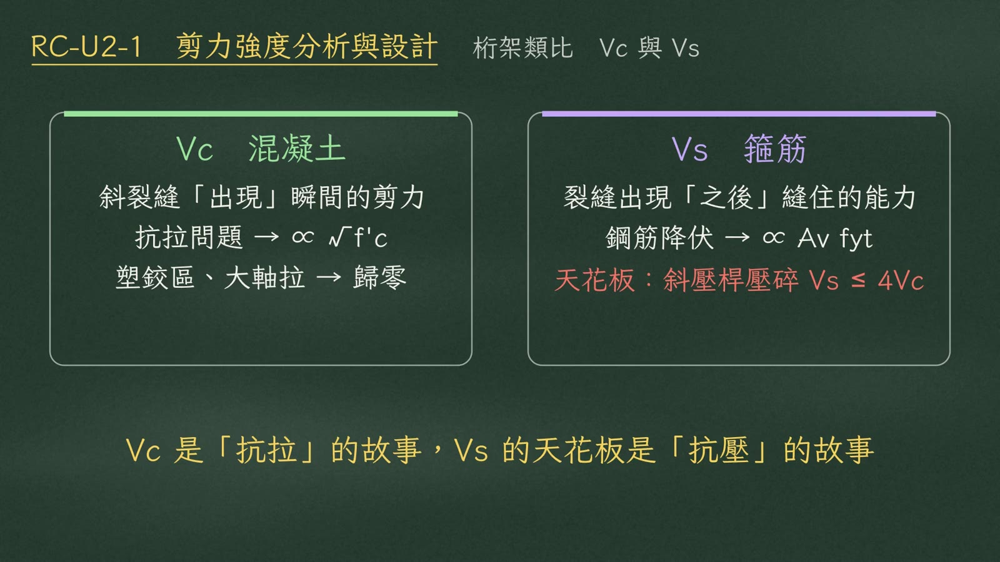
跨過裂縫的箍筋提供 \(V_s\)。
| Vc 混凝土 | Vs 箍筋 | |
|---|---|---|
| 是什麼 | 斜裂縫「出現」瞬間的剪力 | 裂縫出現「之後」箍筋縫住裂縫的能力 |
| 物理 | 抗拉問題 → \(\propto\sqrt{f'_c}\) | 鋼筋降伏 → \(\propto A_vf_{yt}\) |
| 極限 | 塑鉸區、大軸拉 → 歸零 | 天花板來自斜壓桿壓碎：\(V_s\le4V_c\) |
4Vs 是數出來的
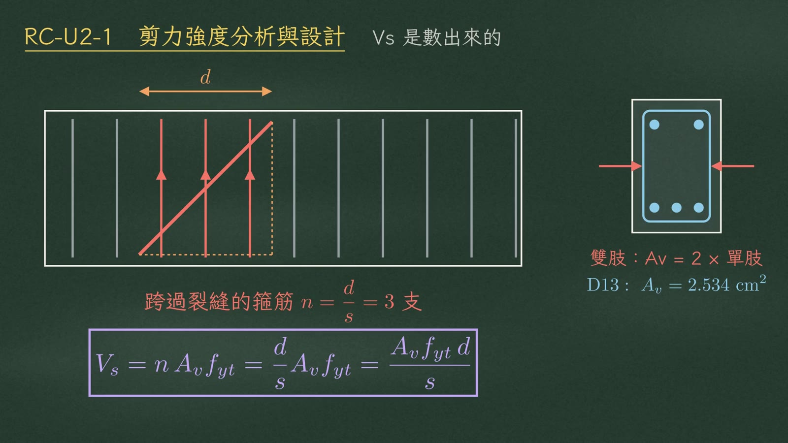
\(V_s\) 的公式是數出來的。45° 裂縫的水平投影剛好是 \(d\)；間距 \(s\)，跨過裂縫的箍筋就有 \(d/s\) 支，每支貢獻 \(A_vf_{yt}\)，相乘：
$$V_s=n\,A_vf_{yt}=\frac{d}{s}A_vf_{yt}=\frac{A_vf_{yt}\,d}{s}$$\(A_v\) 是一組箍筋的總面積（雙肢：\(A_v=2\times\) 單肢），D13 雙肢 \(A_v=2.534\ \text{cm}^2\)。
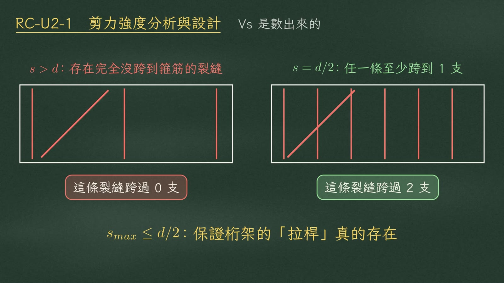
d 時有裂縫一支都沒跨到；s = d/2 時任一條至少跨到一支" loading="lazy">為什麼間距要 \(s\le d/2\)？如果 \(s>d\)，就有裂縫完全沒跨到箍筋；取 \(d/2\)，任何一條裂縫至少跨到一支。
5關卡一 臨界斷面
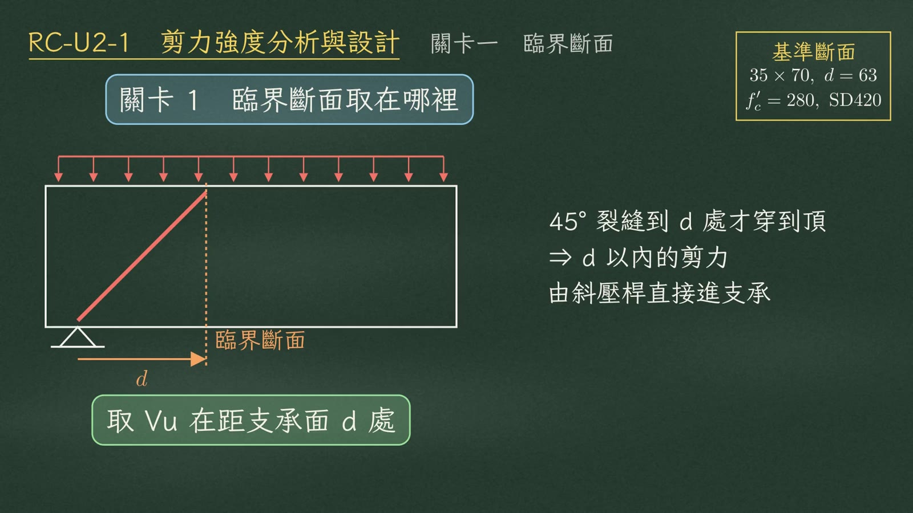
接下來是四道關卡。關卡一，臨界斷面。規範允許取距支承面 \(d\) 處的 \(V_u\)，因為 45° 裂縫到 \(d\) 處才穿到頂，\(d\) 以內的剪力由斜壓桿直接進支承。
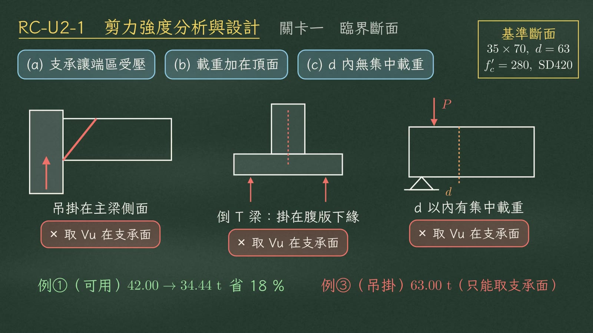
但三個前提要同時成立：
(a) 支承讓端區受壓 (b) 載重加在頂面 (c) \(d\) 以內沒有集中載重
| 例題 | 可否取 d 處 | Vu |
|---|---|---|
| 例① | 可用 | 42.00 → 34.44 t，省 18 % |
| 例③（吊掛） | 只能取支承面 | 63.00 t |
6關卡二 Vc 四張臉
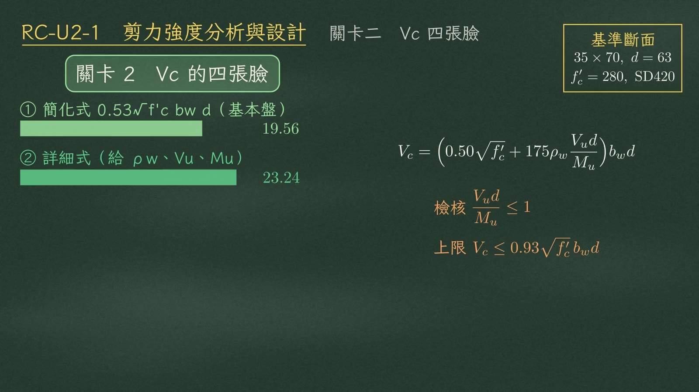
關卡二，\(V_c\) 有四張臉。沒提軸力，用簡化式：
$$V_c=0.53\sqrt{f'_c}\,b_wd=19.56\ \text{t}$$給了 \(\rho_w\)、\(V_u\)、\(M_u\)，用詳細式，得 23.24 t：
$$V_c=\left(0.50\sqrt{f'_c}+175\rho_w\frac{V_ud}{M_u}\right)b_wd$$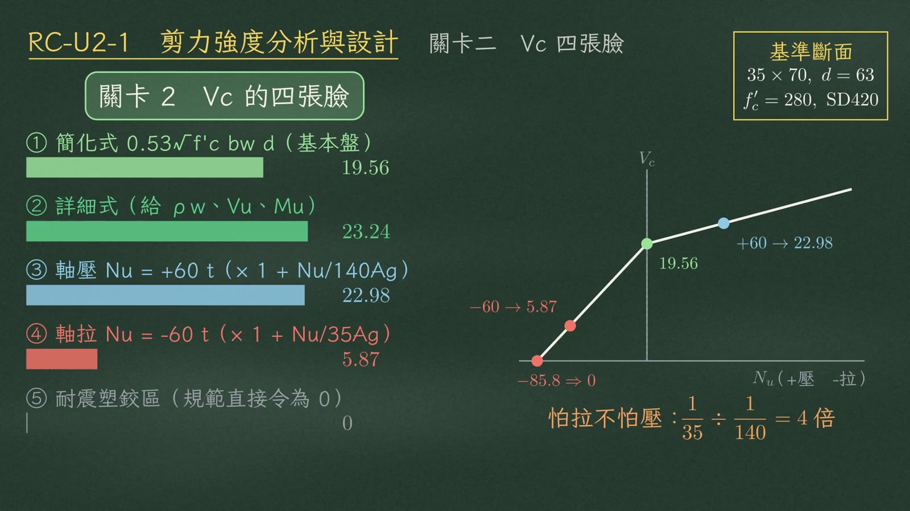
有軸力就乘修正：
| 情形 | 修正係數 | 基準斷面結果 |
|---|---|---|
| ① 簡化式 | — | 19.56 t |
| ② 詳細式 | — | 23.24 t |
| ③ 軸壓 \(N_u=+60\) t | \(\times\left(1+\dfrac{N_u}{140A_g}\right)\) | 22.98 t（+17.5 %） |
| ④ 軸拉 \(N_u=-60\) t | \(\times\left(1+\dfrac{N_u}{35A_g}\right)\) | 5.87 t（−70 %） |
| ⑤ 耐震塑鉸區 | 規範直接令為 0 | 0 |
板上折線另標出：軸拉到 \(N_u=-85.8\) t 時 \(V_c\) 降到 0。
7關卡三 Vs 區間
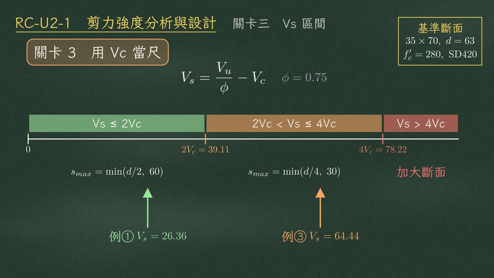
關卡三：
$$V_s=\frac{V_u}{\phi}-V_c,\qquad\phi=0.75$$再拿 \(V_c\) 當尺：\(2V_c=39.11\)、\(4V_c=78.22\)。
| Vs 區間 | smax | 例 |
|---|---|---|
| \(V_s\le2V_c\) | \(\min(d/2,\ 60\ \text{cm})\) | 例① \(V_s=26.36\) |
| \(2V_c<V_s\le4V_c\) | \(\min(d/4,\ 30\ \text{cm})\) 裂縫變密，減半 | 例③ \(V_s=64.44\) |
| \(V_s>4V_c\) | 加大斷面 | — |
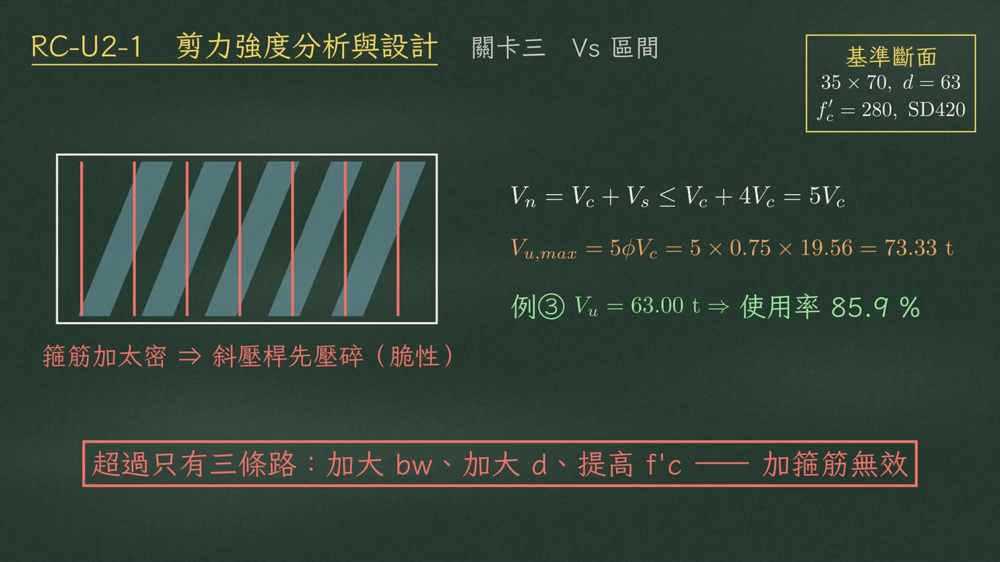
超過四倍 \(V_c\)，破壞換成斜壓桿壓碎，脆性，加再多箍筋也沒用。所以
$$V_n=V_c+V_s\le V_c+4V_c=5V_c$$ $$V_{u,max}=5\phi V_c=5\times0.75\times19.56=73.33\ \text{t}$$8關卡四 分區配箍
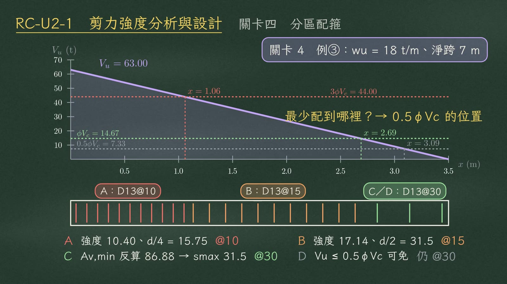
關卡四，把間距沿梁長走一遍。例③均佈 \(w_u=18\) t/m，淨跨 7 m，剪力從支承面 63 直線降到跨中 0。畫三條水平線：
| 水平線 | 值 (t) | 交點 x |
|---|---|---|
| \(3\phi V_c\) | 44.00 | 1.06 m |
| \(\phi V_c\) | 14.67 | 2.69 m |
| \(0.5\phi V_c\) | 7.33 | 3.09 m |
每一區都是強度、\(s_{max}\)、最小箍筋量取最小：
| 分區 | 控制 | 採用 |
|---|---|---|
| A | 強度 10.40、\(d/4=15.75\) | D13@10 |
| B | 強度 17.14、\(d/2=31.5\) | D13@15 |
| C | 只剩最小箍筋量：\(A_{v,min}\) 反算 86.88 → 被 \(s_{max}=31.5\) 控制 | D13@30 |
| D | \(V_u\le0.5\phi V_c\) 規範可免 | 實務仍配 @30 |
9邊界一 深梁 STM
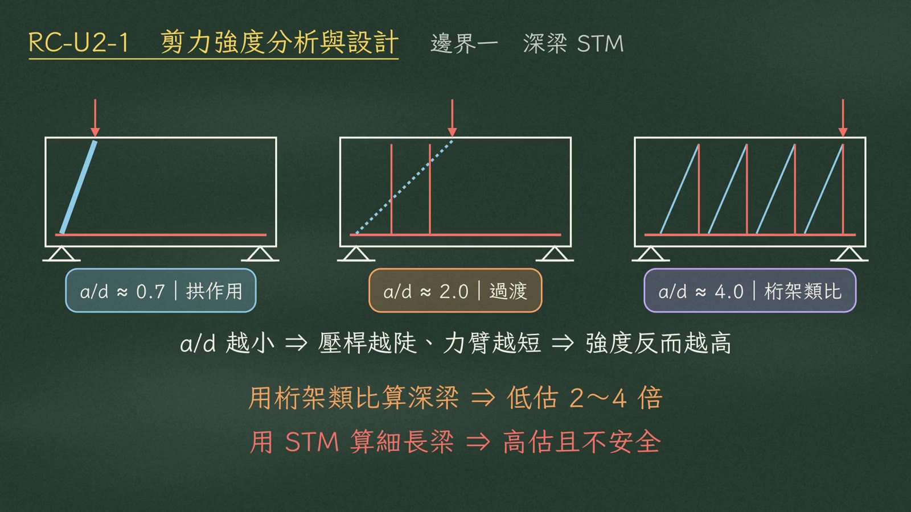
第一個邊界主題，深梁。\(a/d\) 越小，壓桿越陡、力臂越短，強度反而越高；\(a/d\le2\)，拱作用直接把載重帶進支承，箍筋不再是主要路徑。
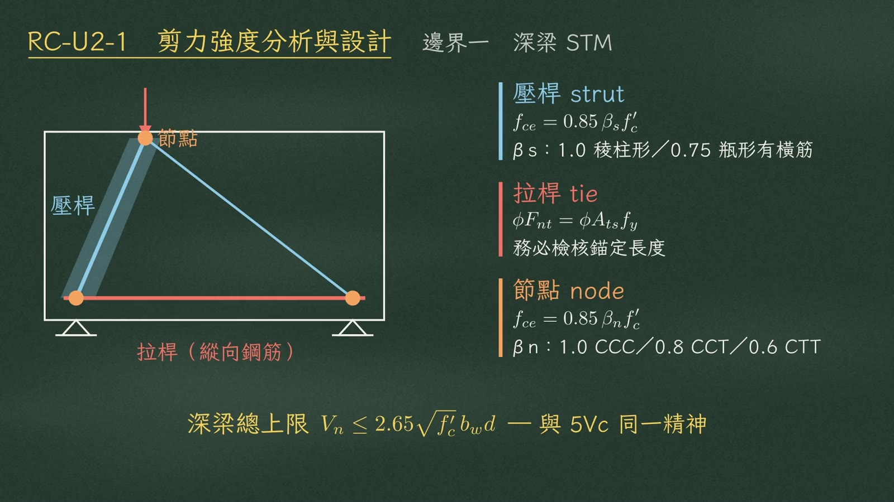
壓拉桿只驗三樣：
| 構件 | 強度 | 係數 |
|---|---|---|
| 壓桿 strut | \(f_{ce}=0.85\beta_sf'_c\) | \(\beta_s\)：稜柱形 1.0；瓶形有橫向鋼筋 0.75 |
| 拉桿 tie | \(\phi F_{nt}=\phi A_{ts}f_y\) | 務必檢核錨定長度 |
| 節點 node | \(f_{ce}=0.85\beta_nf'_c\) | \(\beta_n\)：三面受壓 1.0（CCC）；一根拉桿 0.8（CCT）；兩根以上 0.6（CTT） |
板上另寫：深梁總上限 \(V_n\le2.65\sqrt{f'_c}\,b_wd\)，與 \(5V_c\) 同一精神。
10邊界二 剪力摩擦
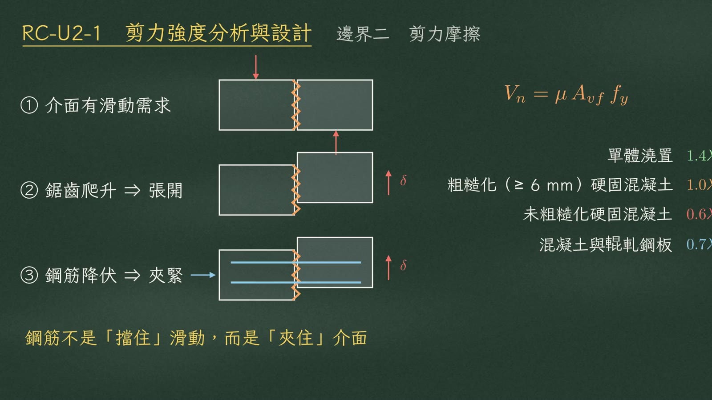
第二個邊界主題，剪力摩擦。粗糙面滑動一定伴隨張開，垂直介面的鋼筋被拉到降伏，產生夾緊力，再變成摩擦力：
$$V_n=\mu A_{vf}f_y$$\(\mu\) 是規範的等效值：
| 介面 | μ |
|---|---|
| 單體澆置 | 1.4 |
| 粗糙化（≥ 6 mm）硬固混凝土 | 1.0 |
| 未粗糙化硬固混凝土 | 0.6 |
| 混凝土與輥軋鋼板（板上列出） | 0.7 |
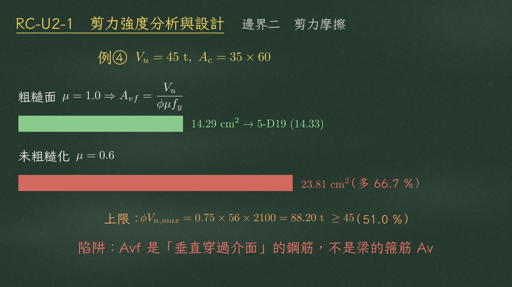
例④，\(V_u=45\) t，\(A_c=35\times60\)：
$$A_{vf}=\frac{V_u}{\phi\mu f_y}$$| 介面 | Avf | 配筋 |
|---|---|---|
| 粗糙面 \(\mu=1.0\) | 14.29 cm² | 5-D19（14.33） |
| 未粗糙化 \(\mu=0.6\) | 23.81 cm² | 多了 66.7 % |
11四個陷阱
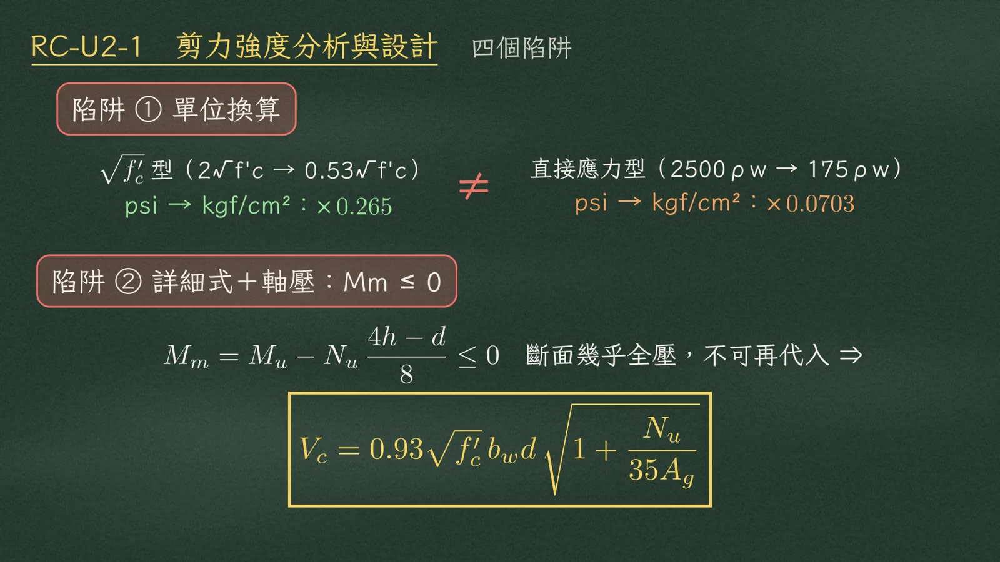
| 型式 | 例 | psi → kgf/cm² |
|---|---|---|
| 根號型 \(\sqrt{f'_c}\) | \(2\sqrt{f'_c}\to0.53\sqrt{f'_c}\) | × 0.265 |
| 直接應力型 | \(2500\rho_w\to175\rho_w\) | × 0.0703 |
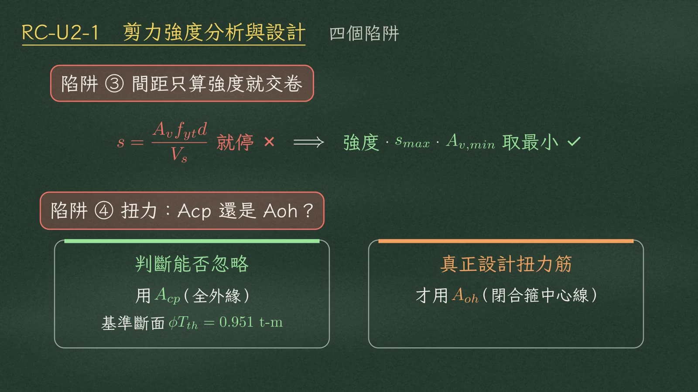
| 用途 | 用哪個面積 |
|---|---|
| 判斷扭力能否忽略 | \(A_{cp}\)（全外緣）；基準斷面門檻 \(\phi T_{th}=0.951\) t-m |
| 真正設計扭力鋼筋 | 才用 \(A_{oh}\)（閉合箍中心線） |
12總結
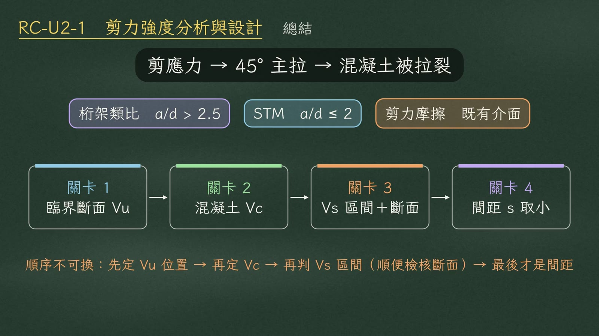
一張圖收尾。剪應力變成 45° 主拉，把混凝土拉裂；再依 \(a/d\) 和介面，分成三大機制：
桁架類比 \(a/d>2.5\) STM \(a/d\le2\) 剪力摩擦 既有介面
一般梁照四關卡走，順序不可換：
| 關卡 | 做什麼 |
|---|---|
| 關卡 1 | 臨界斷面：先定 \(V_u\) 位置 |
| 關卡 2 | 混凝土：再定 \(V_c\) |
| 關卡 3 | 判 \(V_s\) 區間（順便檢核斷面） |
| 關卡 4 | 最後才是間距 \(s\)（取小） |
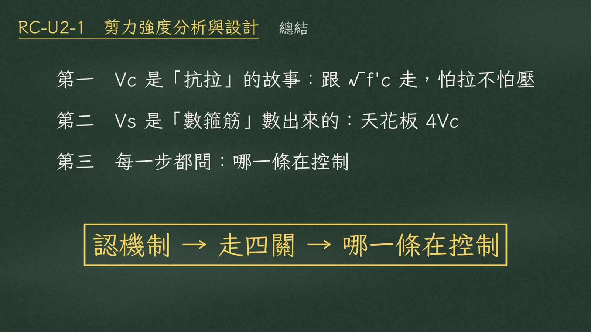
第一 \(V_c\) 是「抗拉」的故事：跟 \(\sqrt{f'_c}\) 走，怕拉不怕壓。
第二 \(V_s\) 是「數箍筋」數出來的：天花板 \(4V_c\)。
第三 每一步都問：哪一條在控制。
認機制 → 走四關 → 哪一條在控制
解題過程影片/RC-U2-1/video/RC-U2-1.mp4（影片 11:46）、segments.py（逐字旁白）、RC-U2-1.srt（時間軸）。黑板圖為各段結束前 0.5 秒截圖。例題數值與 HANDOFF.md 核對一致。